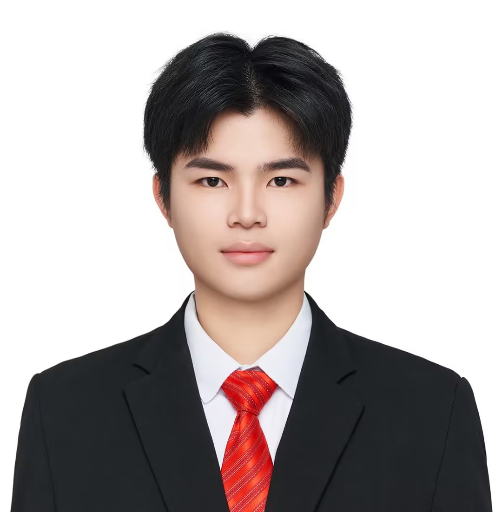
连接艺术与技术，为游戏和实时渲染创造视觉奇迹
你好！我是张涛，一名技术美术（TA），专注于架起艺术与技术的桥梁。
核心能力：准确理解美术需求，将策划设定的美术风格转化为可落地的技术方案，擅长将画面质量从90分提升到95分。具备扎实的图形学基础和数学能力，精通Shader编程、材质开发和渲染管线优化。
工作态度：学习能力强，吃苦耐劳，面对技术难题善于主动寻求解决方案，积极在技术社区学习交流。团队协作能力出色，能与美术、策划高效沟通，共同实现复杂视觉效果。
个人特质：为人谦虚，乐观开朗，清晰认知自身不足并保持持续学习。具备自我驱动力，相信技术与艺术的结合是创造优秀作品的关键，并始终以此为职业目标。
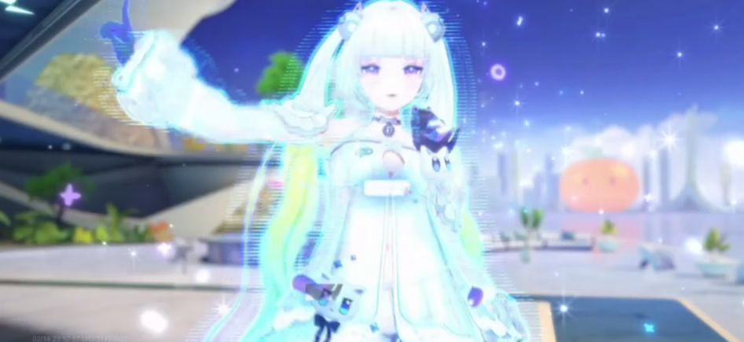
虚拟平面波点效果，挂载在角色头发上，实现呼吸流动的大小变化效果。
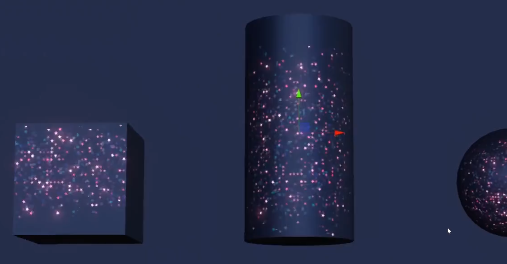
复杂效果版本，有3层闪点，指令数84，可实现高密度闪点,通过细节图任意定制闪点图案，需配套贴图。
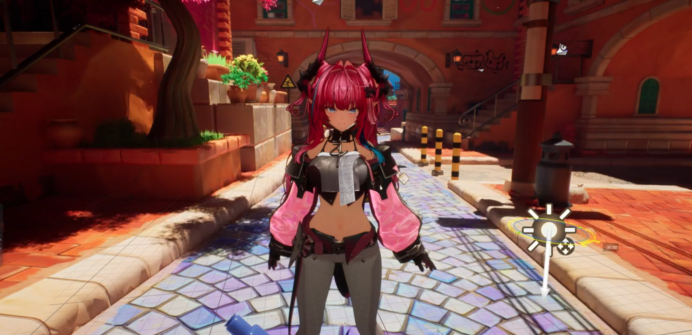
SDF与头发阴影的融合，PBR风格下的NPR，眼部球形折射，KK头发渲染模型，高饱和的后处理风格，果冻彩色的类油模材质。
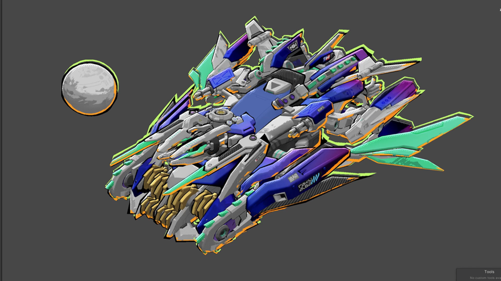
复制LOD低模做夸张描边，基于深度的描边往灯光方向偏移，硬Noise做笔触感用Fresnel控制UV方向，屏幕空间下的素描线。
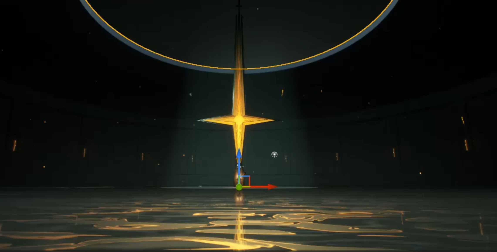
十字星光效果，流动的金色水面反射，Noise驱动的波纹扰动，程序化粒子飘散，体积光与Bloom结合的神圣氛围。
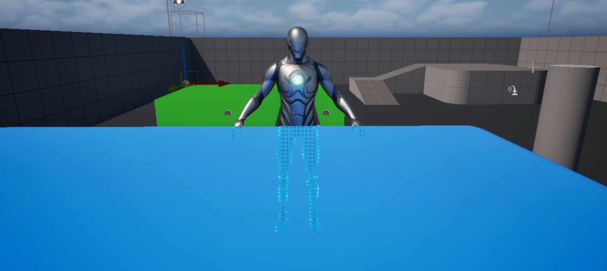
双Pass深度测试渲染遮挡效果，屏幕空间矫正保持波点视角稳定，Fresnel控制波点大小。
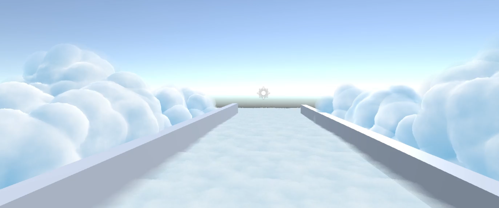
3D Noise模拟云层层次感，SH存储全方向厚度图实现视角变化半透效果，厚度图快速次表面散射模拟，路面GPU Instance绒毛体积感。
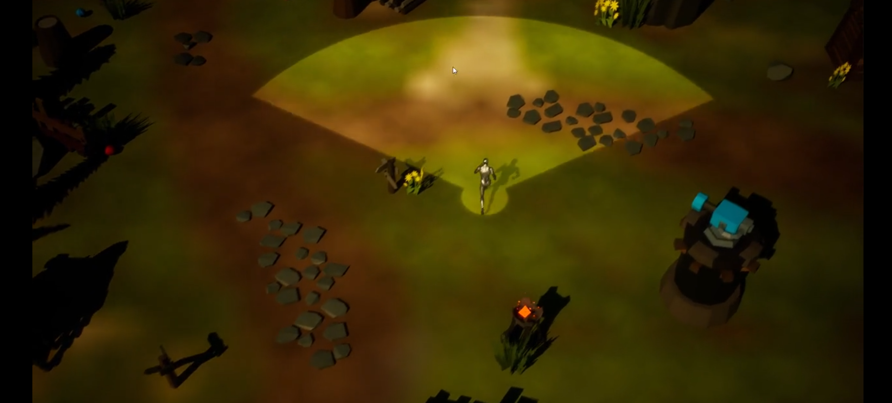
GPU并行计算战争迷雾，收集3张RT写入场景信息，材质对视野方向进行类Raymarching操作判断遮挡。
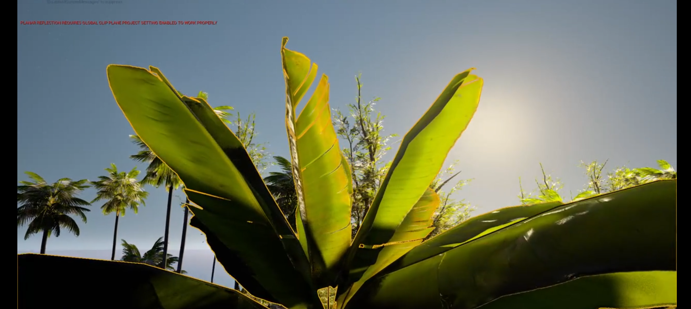
区分大小叶片优化光照表现，叶片上下表面光滑度区分，次表面贴图细节处理，烘焙AO增强细节，草地自下而上遮蔽渐变。
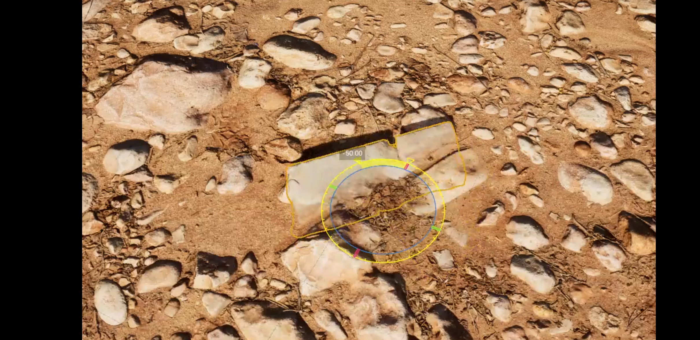
RVT地形融合方案，三平面UV采样减少采样次数，Dither模糊平面边界消除缝隙感。
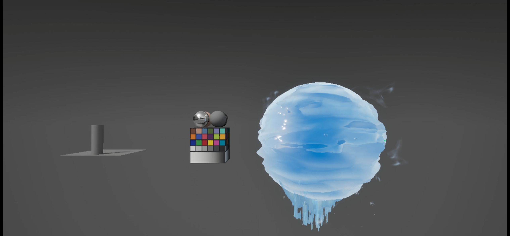
程序化水材质表现，顶点动画驱动球体流动，Houdini生成环绕曲面装饰，LookDev搭建完整视觉呈现。
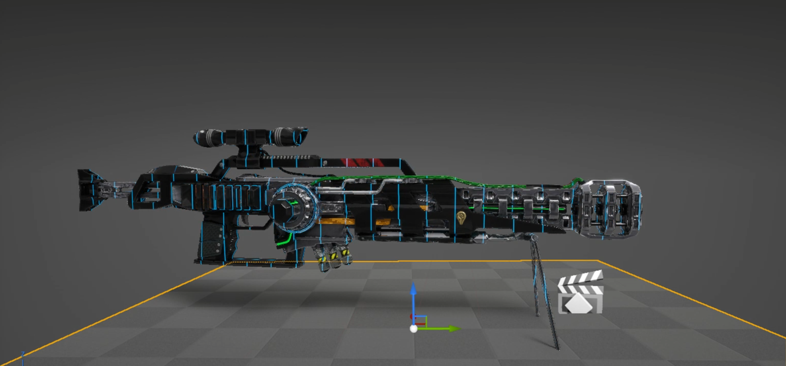
PivotPainter工具生成枢轴数据，Houdini在UV2写入渐变Curve，实现自定义方向的溶解切换效果。
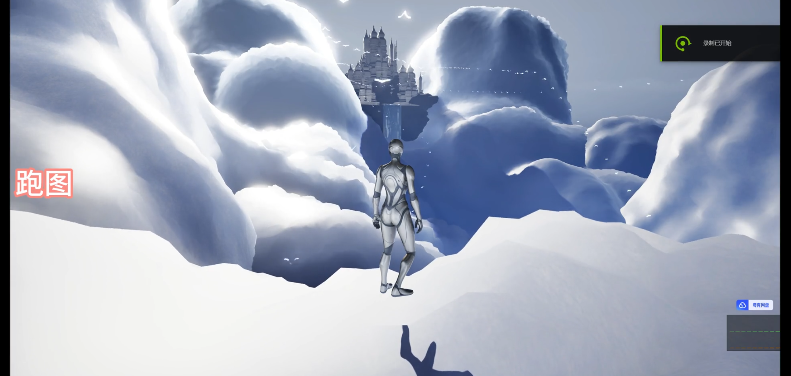
完整的风格化场景系统，包含模型云、角色草水交互、样条线飞鸟、Billboard草、PivotPoint草片等多种技术元素。
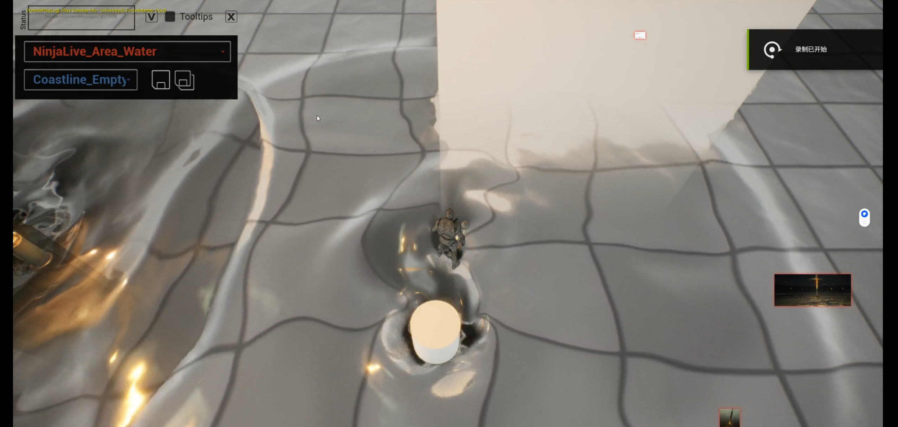
魔改UE插件NinjaFluid，增加对基础贴图的扰动，实现水墨晕染的流体交互效果。
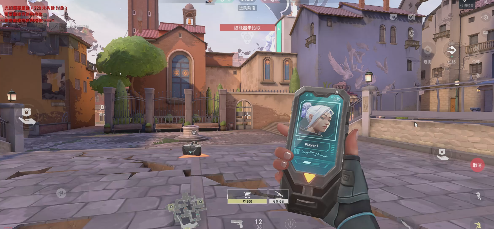
移动端材质优化，复刻端游效果，矫正HDR/LDR设备差异，使用SDF字体保证低mip层级清晰度。